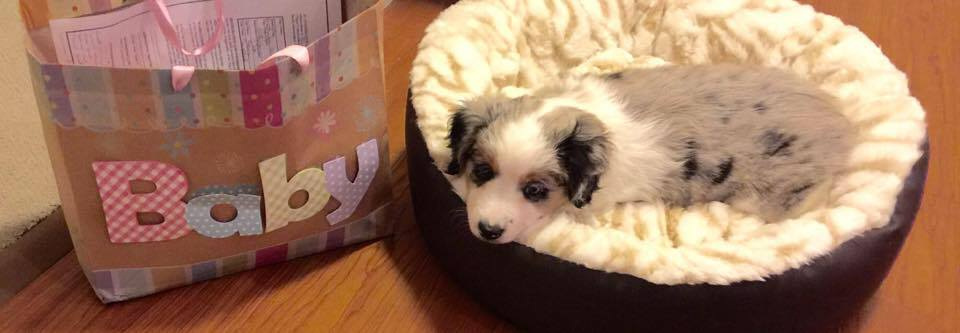

Loquita
Hi there and welcome to my webpage. My name is Loquita, that means "crazy little girl" in spanish. I'm not exactly sure how I got my name. I think it's because I like to bark at skate boards, bikes, cars, people on roller blades, etc..., pretty much anything with wheels, lol. I'm 15 months old, I'm a pure-bread miniature australian shepard, which really means I just like to nip at your feet when you're not looking. I like to follow you where ever you go because I have herding instincts, at least that's what wikipedia says. I'm really a loveable dog at the end of the day, just, no skateboards, please don't skateboard around me...ever.